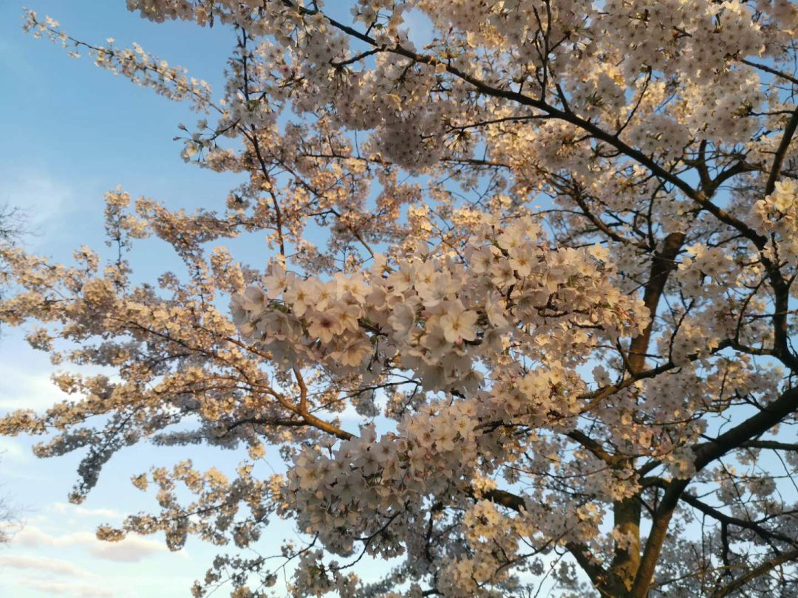

3⁄14 神经兮兮地把消毒洗手液在脸上抹了抹
原文链接 备份链接 伦敦，3月14日。出门前和室友讨论在外面摘下口罩的时候把口罩放哪儿的问题，她说她的可以叠起来，而我的是只有钢丝的普通外科口罩，并不方便。于是室友大发慈悲，我用五个没气阀的Silverline换了她一个可折叠、可重复使用 …
3月16日，伦敦。

十点钟，窗户外面传进来，幼儿园里孩子的哗啦哗啦的笑声。蓝天白云，阳光刺眼，“孩子们还没回家啊”……这是心里的反应。
Boris Johnson今天又开了记者会，“today we need to go further”，鼓励在家办公，停止社交，停止去剧院、听音乐会以及在pub喝酒。马克龙宣布关闭法国边境，我那爱party的房东今日决定留在法国，在Fontainbleau的房子过一阵子。挺好，要是她今天开车回来我还要担心她闲不住要在伦敦四处串门，在Fontainbleau，她可以骑马逛森林。
今天宅家生活的确是go further了：神仙室友给我做了《食戟之灵》里的苹果烩饭佐香煎培根，还有茼蒿豆腐羹。一会儿感觉是在法餐厅，一会儿像回到了中国的春天。
前两天沿着Battersea Park的河边步道走，突然在桥头看见一株河边的垂柳，枝条已萌了嫩芽，树干斜探到河水上，拂堤杨柳醉春烟，它与水波一起在这儿荡了三年，我居然才碰着它，不，是终于“看见”了它——何况底下还有架椅背漆成了朱红色的长椅呢。我早该在这儿陪她。
想家吗，想的。如果此时在家，会和爸妈进山，挖苦菜和荠菜，山桃也马上要开了。虽然果园里的桃树大多仍是要结果的经济作物，身形粗壮、枝干修得傻愣，桃红的花色细看有些艳俗——但是在山脚的位置，从远处看桃花就是星星点点的粉色洒在正慢慢返青的群山上，起伏的山丘挨着还在枯水期的河道，但土坡上已有了连绵的粉黛。
就这样，某个瞬间仿佛是放假了，仿佛并不是在躲病——你们也会有这种错觉吧，行事历上空荡荡的、可以和朋友打一个小时电话不觉得要挂掉了——但其实要工作的，该挣的钱、该谋的生、该交的稿、该交的房租，都会在这阵错觉消失之后再漫回来。但疫情这事儿，就是让生活停下来了，一些脑子里顽固的偏见甚至都动摇了，自洽的系统突然裂开了，突然觉得需要好好检查自己，需要和别人聊一聊。
Song Ta打了个电话来，他就是，以前一个臭屁得觉得没什么话题值得说道的人，突然觉得得找人聊聊。我跟他说这是于我而言的春夏之交，是突然醒过来，觉得那些抽象的问题都变得具体。他觉得这比那影响力大得多，一个某个区域的事件蔓延到全球成为人类共有的课题，甚至改变全球的政治经济结构，上一次做到这样的，还是“911”和遏制恐怖主义的连锁反应。中国现在也开始介入到全球抗疫这连锁反应里了，“一省包一国”也是很好的外交和展示实力的机会。做一件事，其实都是另一件事的“演习”。
傍晚穿上长雨衣、戴了N99口罩去公园。路过超市时发现货架上蔬菜都在，公园里人比平常少一些，但没人带口罩、更别提像我一样这么高调防护。我们这儿是伦敦西边的养老区，大多是白人居民。当然会有路人发现我全副武装，忍不住瞧瞧我，我会用眼睛冲他们笑——他们要是笑得停下来，我就会跟他们聊聊天，问一下他们这么轻松从容是因为目前收到的信息让人不重视吗，然后再顺便科普一下之后怎么防护。有个奶奶说之后会考虑戴大墨镜出门；在酒吧门口的一桌年轻人说，怎么会害怕病毒呢，我们都这么年轻——于是严肃地告诉他们说这是肺炎，其中一个英国女孩突然开口说磕磕巴巴的中文，原来她学了一年汉语、在北京待了三个月，又决定放弃，“太难了”；一个穿得十分chic的姐姐说她应该只有两种模式，出门遛狗如常生活，和彻彻底底lock down，因为她根本也没口罩这个东西。我们隔着她的黑贝，一起看了会儿花。樱花彻彻底底都开透了，比去年早了一整周，今年没有下雪。
今天出来走这一遭也是想做个试验，穿得这么嚣张到底会怎么样。但我这种策略，知道自己会引人注意、所以主动互动和逗趣的方式，不是每个人都会这么做。在伦敦这几年，被熊孩子扔过小石子，走在路上偶尔听见“ni-hao-ma””mei-nv”，一个多月前戴口罩会被绕着走，前两天在街上的男子作势要摘我口罩——其实大多数时候碰到的这种显而易见的“歧视”，是歧视者本身就想作弄、欺负、恶心人，他们知道这是错的，行为本身是临时的释放。我并不害怕这种，因为那些知道自己在作恶的人总会有些心虚。反过来，更应该警惕的是那些正义、光明、持久的欺负。


原文链接 备份链接 伦敦，3月14日。出门前和室友讨论在外面摘下口罩的时候把口罩放哪儿的问题，她说她的可以叠起来，而我的是只有钢丝的普通外科口罩，并不方便。于是室友大发慈悲，我用五个没气阀的Silverline换了她一个可折叠、可重复使用 …
原文链接 备份链接 今天是3月18日，月相为29%的残月。 It is March 18 with a 29 percent of Waning Crescent. 距离新月还有 6 天。 There are 6 days until …
原文链接 备份链接 今天是3月15日，月相为60%的下弦月。 It is March 15 with a 60 percent of Last Quarter. 距离新月还有 9 天。 There are 9 days until New …
原文链接 备份链接 该来的总会来的。学校会停的，考试会续的，网课会搞起的。昨天被amis问买什么比较好囤，承蒙一声康街大厨，就分享一下我的一点小心得吧。（国内的朋友们就没必要参考了，我相信你们已经很熟练了，而且壮哉我大天朝物价&生 …
原文链接 备份链接 经济观察网 记者 刘可 连日奔袭一千公里后，宋翔雷终于到了湖北武汉。 开货车十几年了，来武汉这么多次，但这还是宋翔雷第一次能将车开上武汉三环内。车窗外划过的风景依旧是熟悉的林立高楼与城市街景，但太静了，因为带着口罩而略 …